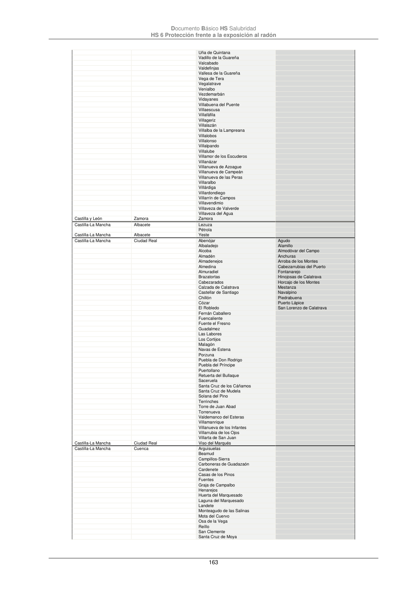

DB-HS Salubridad · edición 2022-06-14 · capa oficial
Documento DB-HS-oficial · SHA-256 del PDF 68df3caacc95f71aee2ec1ba7b2c65ae66155c21e3a8785521b8fdd4fd640d3b
Página física 163 de 184.
Copia fiel del PDF fuente · Fuente oficial
Ficha de la disposición en la fuente oficial
Formato: Texto de la página (Markdown)
Documento Básico HS Salubridad HS 6 Protección frente a la exposición al radón 163 Uña de Quintana Vadillo de la Guareña Valcabado Valdefinjas Vallesa de la Guareña Vega de Tera Vegalatrave Venialbo Vezdemarbán Vidayanes Villabuena del Puente Villaescusa Villafáfila Villageriz Villalazán Villalba de la Lampreana Villalobos Villalonso Villalpando Villalube Villamor de los Escuderos Villanázar Villanueva de Azoague Villanueva de Campeán Villanueva de las Peras Villaralbo Villárdiga Villardondiego Villarrín de Campos Villavendimio Villaveza de Valverde Villaveza del Agua Castilla y León Zamora Zamora Castilla-La Mancha Albacete Lezuza Pétrola Castilla-La Mancha Albacete Yeste Castilla-La Mancha Ciudad Real Abenójar Agudo Albaladejo Alamillo Alcoba Almodóvar del Campo Almadén Anchuras Almadenejos Arroba de los Montes Almedina Cabezarrubias del Puerto Almuradiel Fontanarejo Brazatortas Hinojosas de Calatrava Cabezarados Horcajo de los Montes Calzada de Calatrava Mestanza Castellar de Santiago Navalpino Chillón Piedrabuena Cózar Puerto Lápice El Robledo San Lorenzo de Calatrava Fernán Caballero Fuencaliente Fuente el Fresno Guadalmez Las Labores Los Cortijos Malagón Navas de Estena Porzuna Puebla de Don Rodrigo Puebla del Príncipe Puertollano Retuerta del Bullaque Saceruela Santa Cruz de los Cáñamos Santa Cruz de Mudela Solana del Pino Terrinches Torre de Juan Abad Torrenueva Valdemanco del Esteras Villamanrique Villanueva de los Infantes Villarrubia de los Ojos Villarta de San Juan Castilla-La Mancha Ciudad Real Viso del Marqués Castilla-La Mancha Cuenca Arguisuelas Beamud Campillos-Sierra Carboneras de Guadazaón Cardenete Casas de los Pinos Fuentes Graja de Campalbo Henarejos Huerta del Marquesado Laguna del Marquesado Landete Monteagudo de las Salinas Mota del Cuervo Osa de la Vega Reíllo San Clemente Santa Cruz de Moya

Datos candidatos: compruebe celdas y notas en el PDF.